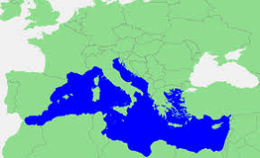
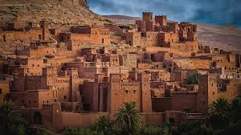
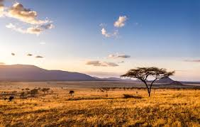

600 av. J.-C.
Fondation de la ville de Massalia (aujourd'hui Marseille) par des colons grecs venus de Phocée. Marseille est la plus ancienne ville de France et un important port de commerce dès l'Antiquité.
|  |
 |
|
|
|
|
|---|---|---|---|---|---|
| NOTRE FACTION | NOS TERRITOIRES | NOS SPÉCIALITÉS | NOS SYMBOLES | NOTRE HISTOIRE |
|
Drapeau de la Faction du Sud par: @yellowboiii1
|
Devise de la faction du Sud par: @dechalon
|
|---|
 OCCITANIE
OCCITANIE
Région du sud de la France, riche en patrimoine historique et culture occitane.
|
PACA
Célèbre pour ses paysages méditerranéens, son art de vivre et ses villes emblématiques comme Nice et Marseille.
|
CORSE
Île française en Méditerranée, réputée pour ses montagnes sauvages, ses plages idylliques et sa culture corse forte.
|
INDO-PACIFIQUE
Terme géopolitique désignant l'engagement de la France dans la région Asie-Pacifique, incluant les territoires français comme la Nouvelle-Calédonie et la Polynésie.
|

MAGHREB/
MOYEN-ORIENT Région d'Afrique du Nord comprenant le Maroc, l'Algérie et la Tunisie, connue pour son mélange unique de cultures arabe, berbère et méditerranéenne
|

AFRIQUE
Continent diversifié, riche en cultures, langues et paysages, abritant une faune et une flore uniques ainsi qu'une histoire ancienne et complexe.
|
|---|


Le Calif Al-Chalon, notre guide spirituel.
L'aigle égyptien, notre animal totem.
Marseille, Notre capitale
L'hymne de notre fière nation, chanté par @dechalon
Fondation de la ville de Massalia (aujourd'hui Marseille) par des colons grecs venus de Phocée. Marseille est la plus ancienne ville de France et un important port de commerce dès l'Antiquité.
Le roi wisigoth Wallia établit son royaume en Aquitaine, avec Toulouse comme capitale. Ce royaume s'étendait sur une grande partie du sud de la France actuelle.
Charles Martel échoue à stopper l'expansion musulmane qui s'établissent donc sur toute la région du sud de la France et de l'ibérie.
Le Comté de Toulouse devient l'un des plus puissants territoires du sud de la France. Raymond IV de Toulouse est l'un des leaders de la première croisade, il réussit à récupérer certains territoires.
Carcassonne, une forteresse cathare, est assiégée et prise par les croisésors de la Croisade des Albigeois.
Mohammed Ier, roi de Jerusalem, devient roi de France. Cette union marque l'intégration du Muslarn (territoire français occupé par les musulmans) au royaume de France.
Le sud de la France est le théâtre de plusieurs révoltes et insurrections pendant la Révolution française, y compris les révoltes fédéralistes à Marseille et à Toulon.
La Côte d'Azur devient une destination prisée par l'aristocratie européenne, puis les classes modestes de france du Sud, historiquement musulmane.